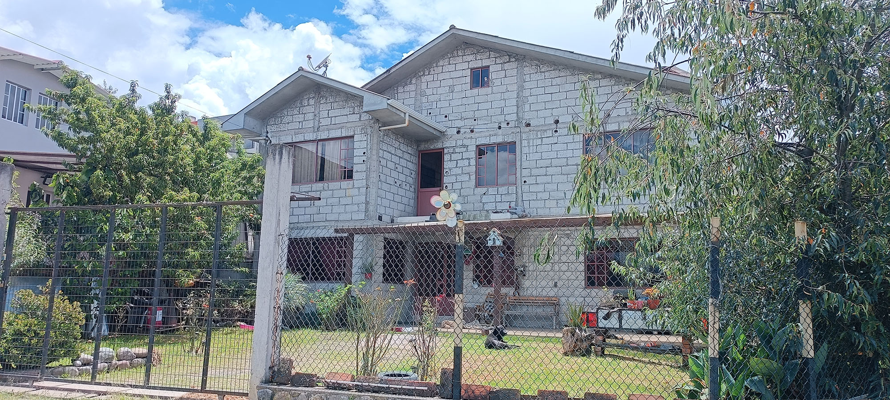
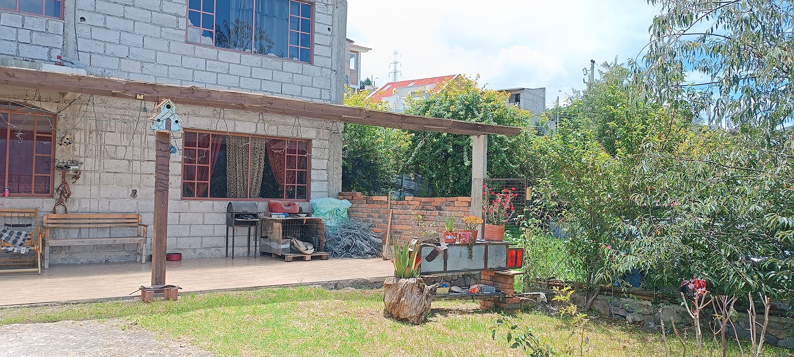
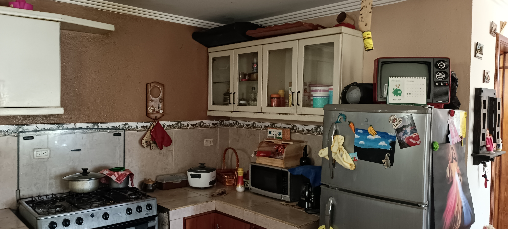
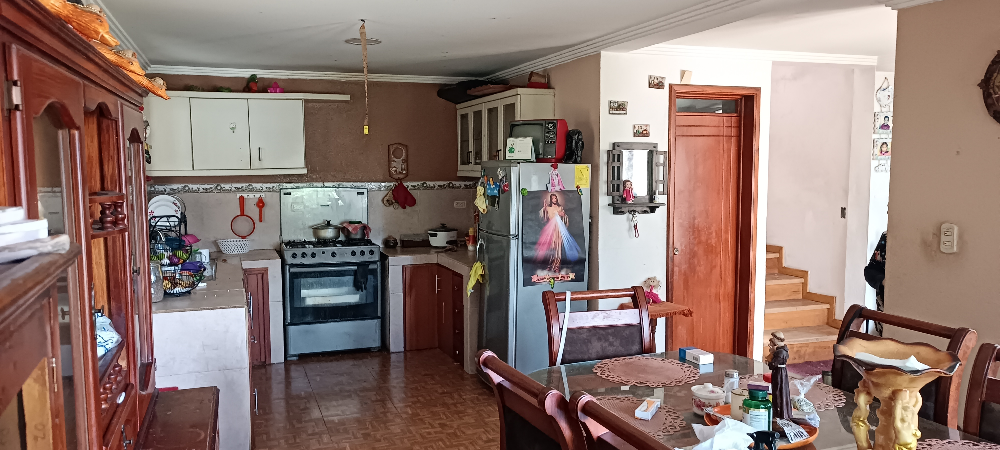
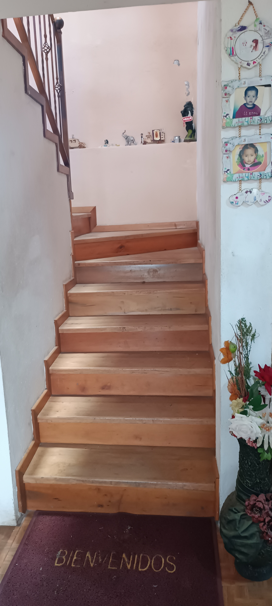
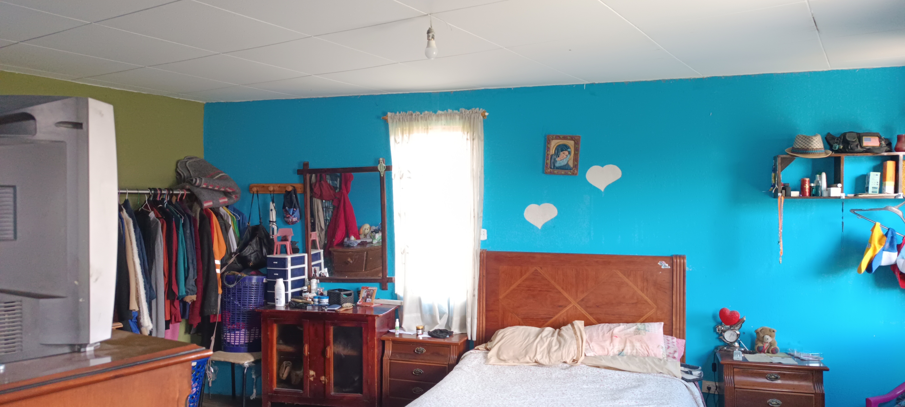
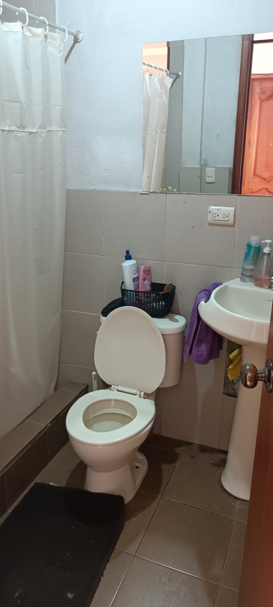

← volver al mapa
Casa - EC-RJ-156025
EC-RJ-156025 · casa · CUENCA, Azuay







Datos del remate
| Avalúo pericial | $88,000 |
| Tipo de bien | casa |
| Área de construcción | 181.23 m² |
| Área de terreno | 232.21 m² |
| Cantón / Provincia | CUENCA, Azuay |
| Dirección / Sector | CHILCAPAMBA. ubicado entre calles sin nombre en el sector rural de la parroquia el valle, cantón cuenca |
| Señalamiento | Segundo Señalamiento |
| Fecha de remate | 2026-09-17 |
| No. de proceso | 01333202508447 |
Análisis vs. mercado
Descartado del análisis automático: sin área/precio conocido para calcular precio por m².
Descripción completa del avalúo
vivienda unifamiliar de dos plantas y buhardilla
el lote el lote es esquinero, de forma regular y topografía plana. se encuentra parcialmente construido, dispone de áreas verdes y sus linderos están definidos por predios colindantes y vías perimetrales. la vivienda la edificación consta de dos plantas y una buhardilla: planta baja: sala comedor cocina baño social lavandería externa planta alta: dormitorio máster con baño dos dormitorios baño compartido buhardilla: espacio único abierto estructura materiales y acabados estructura de hormigón armado con paredes de bloque, entrepisos con vigas de eucalipto sobre cadenas de hormigón armado; planta baja pisos de cerámica; planta alta enduelado de eucalipto lacado, y buhardilla piso de plywood; paredes interiores enlucidas y pintadas; baños y cocinas con cerámica, en el exterior no hay enlucidos; cubierta de asbesto cemento; aleros enlucidos; puertas exteriores en hierro y aluminio e interiores en madera; ventanas de aluminio.
ubicado entre calles sin nombre en el sector rural de la parroquia el valle, cantón cuenca
Límites: norte: con via de ingreso en 14,84 metros; sur: con via sin nombre en 12,62 metros; este: con lorena esperanza ortiz banegas en 18,60 metros; oeste: con via de ingreso en 14,80 metros
Clave catastral: 0101700450837
Periodo de posturas: 17/09/2026 00:00:00 a 17/09/2026 23:59:59
Dependencia jurisdiccional: UNIDAD JUDICIAL CIVIL CUENCA
Análisis de inversión
⚠ Dudosa — revisar bienVivienda unifamiliar de dos plantas y buhardilla, descripción mínima; sin área registrada.
A favor:
En contra:
Análisis elaborado a partir de la descripción del avalúo — no es asesoría legal ni financiera.
Esta ficha es una copia de lo publicado en el sitio oficial de remates
judiciales de la Función Judicial del Ecuador, para consulta — no
reemplaza el expediente judicial. remates.funcionjudicial.gob.ec no da
un link propio por remate, por eso se generó esta página aparte.
Antes de ofertar, el expediente debe revisarlo un abogado.